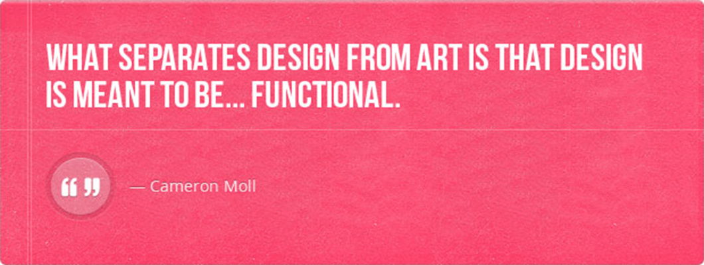
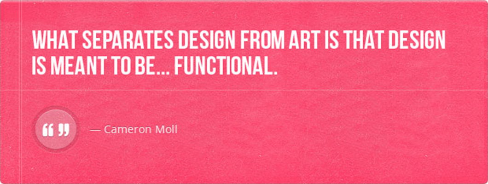

WEB SYSTEMS AND TECHNOLOGIES
 

In September 1994, Sir Tim Berners-Lee founded the World Wide Web Consortium (W3C) at the Massachusetts Institute of Technology with support from the Defense Advanced Research Projects Agency(DARPA) and the European Commission. W3C is an international standards organizational for the World Wide Web. It comprised various companies that were willing to create standards and recommendations to improve the quality of the Web.Sir Tim Berners-Lee was the father and invented the World Wide Web in 1989.
A global information medium which users can read and write via computers connected to the Internet. The term is often mistakenly used as a synonym for the Internet itself, but the Web is a service that operates over the Internet, as e-mail does. Information system on the internet that allows documents and other web resources are identified by UNIFORM RESOURCE LOCATOR (URL), interlinked by hypertext links, and can be accessed via the internet.
Network of networks that consists of millions of private, public, academic, business, and government networks, of local to global scope, that are linked by a broad array of electronic, wireless and optical networking technologies.
Global information system logically linked together by a globally unique address space based on INTERNET PROTOCOL (IP).
Vinton Cerf is the father of the internet. internet was created on the year 1969.